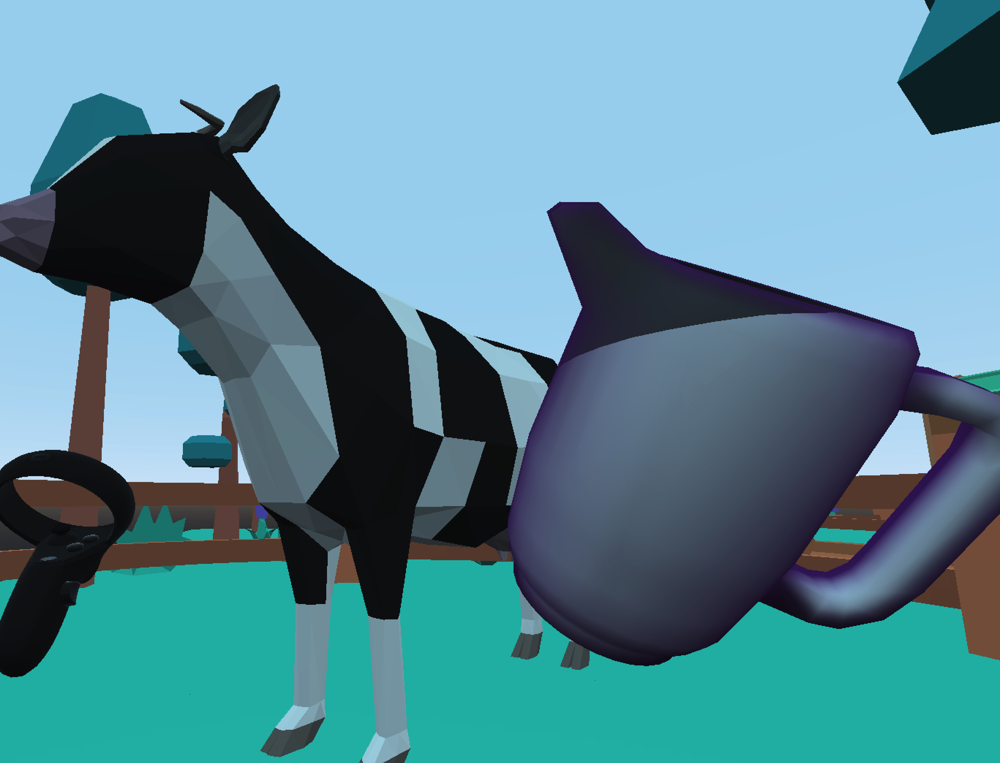
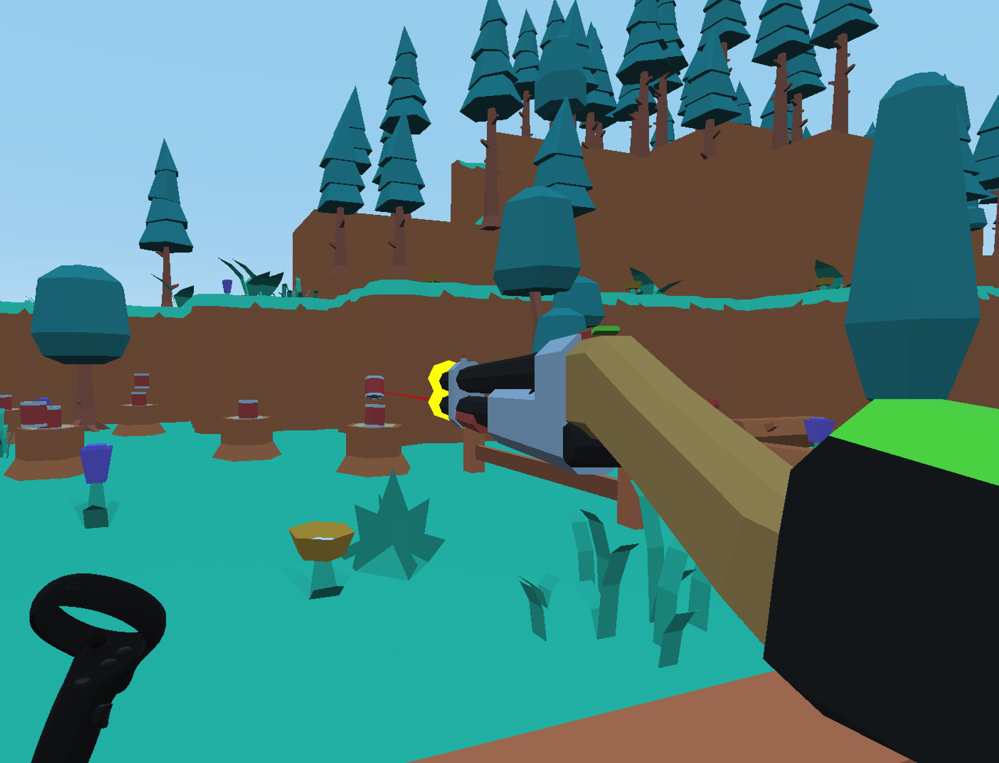
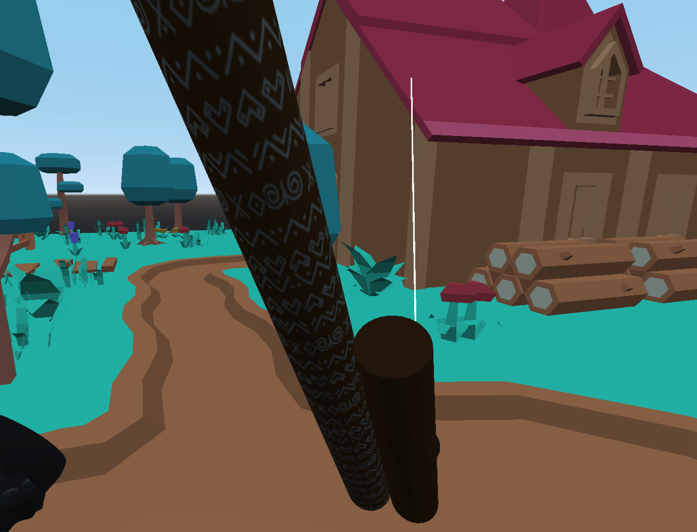
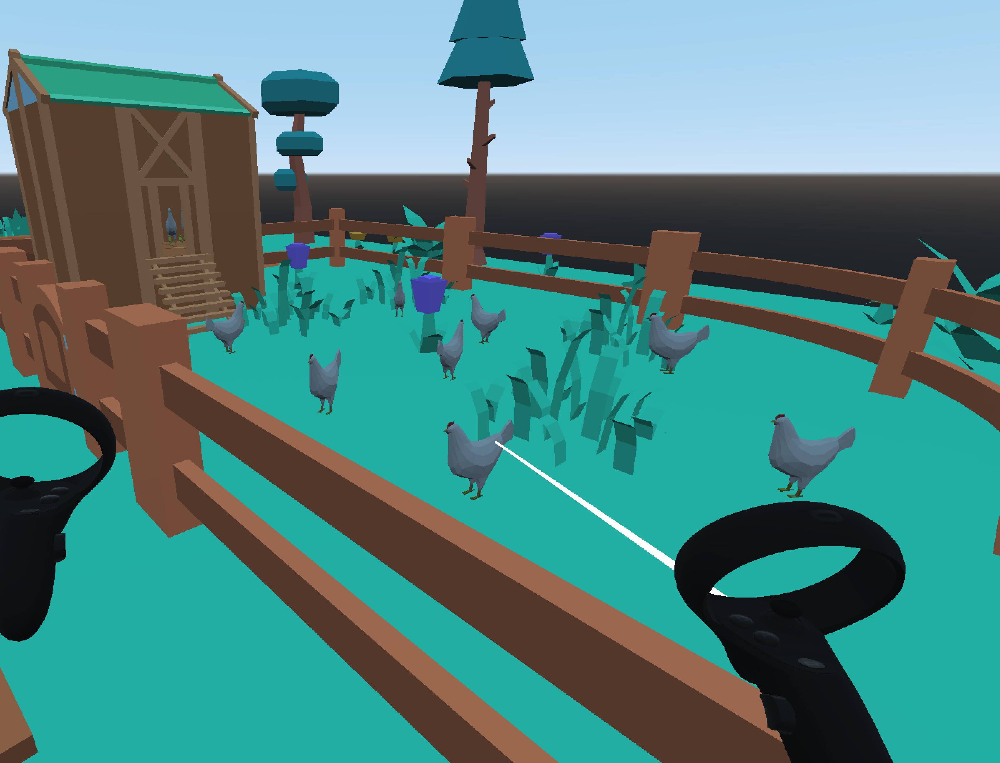

Salaš Simulátor VR
Daniel Breiner; projekt předmětu NI-CCC v zimním semestru 2022
Koncept
Hra Salaš simulátor vznikla s cieľom priblížiť a zábavným spôsobom ukázať život na slovenskom salaši - tradičného sídla pastierov oviec. Na chvíľu sa môžete stať bačom a nechať sa vo virtuálnej realite pohltiť scénou, v ktorej nájdete kolibu, ohrady so zvieratami, jazierko, ale aj strelnicu. Vyskúšate si klasické aktivity ako dojenie kravy, hranie na fujaru, strielanie na plechovky a oberanie zeleniny.
Prevedenie
Hra je vytvorená v hernom engine Godot, verzia 3.5, primárne pre Oculus Quest (mala by podporovať aj ľubovoľný iný headset). Všetky použité materiály (modely, textúry, zvuky) sú pod licenciou CC0. Ako môj prvý VR projekt som sa sústredil na základné VR mechaniky ako chytanie a používanie predmetov, pohyb hráča (joystick, teleport) a interaktivita so scénou.
Náhľad



Odkazy
Hru si môžete stiahnúť z fakultného Gitlabu na
https://gitlab.fit.cvut.cz/breindan/salas-simulator,
kde taktiež nájdete zdrojový kód.